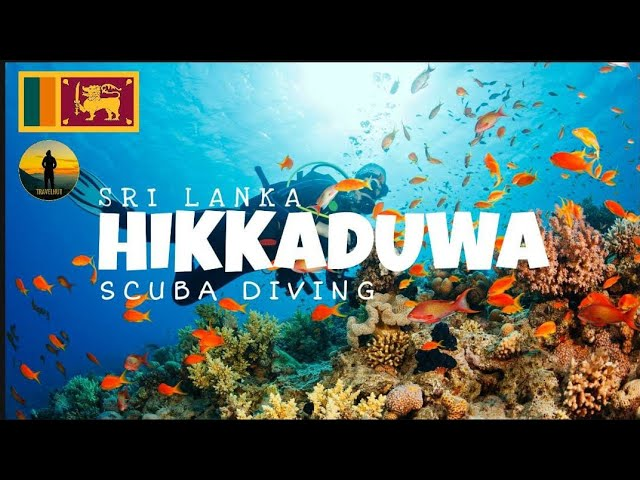
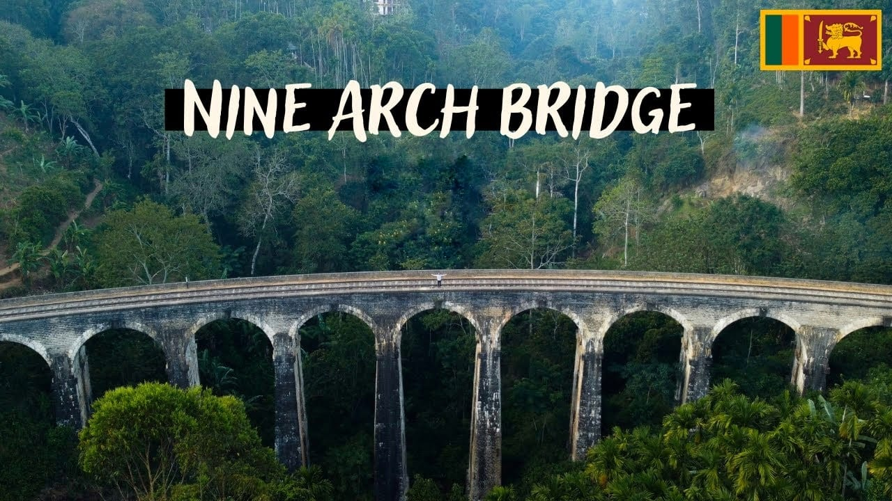

Sigiriya, Sri Lanka, is an enchanting destination for travelers seeking a unique and unforgettable experience.
This UNESCO World Heritage Site is renowned for its ancient rock fortress, rising majestically from lush surroundings.
Climbing to the summit rewards visitors with breathtaking panoramic views of the surrounding landscapes.
Exploring the well-preserved ruins and sophisticated water gardens provides insight into the island's rich history and architectural brilliance.
Sigiriya offers an adventure that combines history, nature, and culture, making it an essential stop for any traveler exploring the wonders of Sri Lanka.

Kandy, Sri Lanka, is a captivating destination known for its rich cultural heritage and stunning landscapes.
The city's highlight is the revered Temple of the Tooth, a sacred site for Buddhists.
The annual Esala Perahera festival is a spectacular display of traditional dance and elephant parades.
Nature enthusiasts will delight in the Royal Botanical Gardens and the picturesque Knuckles Mountain Range.
Kandy's warm hospitality, delicious cuisine, and vibrant markets create an inviting atmosphere for travelers seeking an authentic Sri Lankan experience.
With its historical charm and natural beauty, Kandy promises an unforgettable journey through the heart of Sri Lanka.
Nestled in Sri Lanka's heart, Ella captivates with enchanting beauty. Lush green hills, tea plantations, and majestic waterfalls adorn its landscape.
Ella Rock offers panoramic views, while the Nine Arch Bridge harmonizes with nature. Visitors relish hikes, zip-lining, and rock climbing. Tranquility prevails in cool
misty mornings, perfect for meditation. The town's charm lies in its biodiversity, wildlife, and aromatic tea gardens. Local hospitality adds warmth to the experience,
and starry nights awe with celestial wonders. Ella, a traveler's paradise, leaves an indelible mark on hearts, beckoning them to return to its serene embrace.

Anuradhapura, Sri Lanka, is a mesmerizing travel destination steeped in history and spirituality.
As the ancient capital of Sri Lanka, Anuradhapura is a UNESCO World Heritage Site and a treasure trove of ancient ruins and sacred temples.
The sacred Bodhi Tree, believed to be the oldest historically documented tree in the world, draws pilgrims from all over.
Exploring the vast archaeological sites and serene lakes, visitors can immerse themselves in the serene ambiance of this spiritual and historically significant city.

Galle Fort, a captivating UNESCO World Heritage Site in Sri Lanka, beckons travelers to step back in time and explore its rich history and enchanting beauty.
Perched on the southwestern coast, this 16th-century fortress showcases a seamless blend of European colonial architecture and South Asian influences. Strolling through its cobblestone streets,
visitors are transported to an era of maritime trade and colonial rule. The fort's imposing ramparts offer breathtaking views of the Indian Ocean, while its well-preserved
structures house charming cafes, art galleries, and boutique shops. Galle Fort is a testament to the island's cultural diversity and a must-visit destination for travelers seeking a unique and immersive experience.
Flying Ravana Adventure park is one of a kind experience available in Sri Lanka, located amidst the luscious green estates of Ella. Completed with its pride, Sri Lanka’s first-ever Mega zip-line.
The two-wire zip-line stretches for more than half a kilometer, slides at 80kmph, and offers a bird’s-eye view of the beautiful hills of the island.
The adventure park is exclusively designed for adventure enthusiasts and adrenaline junkies who prefer a not-so-ordinary hillside experience, offering ATV/quad bike rides, Abseiling, Archery, and Air rifling for a gripping outdoor experience.
Flying Ravana is truly, Ella in all its glory.

The Little Adam`s Peak got it`s named after it`s big brother, the holy mountain Adam`s Peak, because of the similar shape.
Adam`s Peak is further west in Sri Lanka, close to Nuwara Eliya, and is 2243 m high and a much more exhausting and more challenging climb! The mountain has however three names;
Adam`s Peak (this is where Adam first set foot on earth after being cast out of heaven), Sri Pada (Buddha`s footprint left by the Buddha as he headed towards paradise) and Samanalakande (Butterfly mountain,
where butterflies go to die). We had plans of climbing Big Adam`s Peak, but Espen hurt his knee so we settled for the “little brother” instead.

Hikkaduwa, Sri Lanka is a town located only 100 kilometers south of Colombo on Sri Lanka’s southern coast.
Its beautiful beaches and large array of restaurants and hotels, make it a top choice for holidaymakers – both local and international.
However, once in Hikkaduwa, it isn’t immediately clear what exactly the best things to do are. Besides lounging on the beach, how should you spend your time in Hikkaduwa, Sri Lanka?
This is what we thought when we first arrived in Hikkaduwa, but after some research and exploring, we discovered there is actually a wide variety of things to do in Hikkaduwa.

Discover Jaffna, Sri Lanka's enchanting northern treasure.
Immerse in its rich history at Jaffna Fort and Nallur Kovil.
Relish Tamil delicacies, engage with friendly locals, and explore vibrant markets.
Nature beckons at Delft Island's wild horses and serene beaches like Casuarina and Keerimalai.
Witness resilience amid poignant reminders of the past. Jaffna's charm and warmth will leave indelible memories of an unforgettable Sri Lankan adventure.
Embrace the allure of this unique destination and let Jaffna captivate your heart.
It is the largest and best preserved cave temple complex in Sri Lanka.
The rock towers 160 m (520 ft) over the surrounding plains.
There are more than 80 documented caves in the surrounding.
Major attractions are spread over 5 caves, which contain statues and paintings.
This paintings and statues are related to Buddha and his life.
There are a total of 153 Buddha statues, three statues of Sri Lankan kings and four statues of god and goddess.
The latter four include two statues of Hindu gods, Vishnu and Ganesh. The murals cover an area of 2,100 m2.
Depictions in the walls of the caves include Buddha's temptation by demon Mara and Buddha's first sermon.

The Nine Arch Bridge , also known as 'Ahas Namaye Palama' or Gotuwala Bridge, was constructed during the British Colonial period between Ella and Demodara stations.
Its name originates from the stunning sight of the sky through its nine arches when viewed from below. Remarkably, this bridge stands as a testament to ingenuity,
as it was built without any steel or metal components, utilizing only rocks, bricks, and cement. Commissioned in 1941,
the bridge faced a setback during World War I when steel and metal materials were redirected for military use. Undeterred,
resourceful builders gathered alternative materials, ensuring the bridge's successful completion as a magnificent example of Sri Lanka's architectural heritage.

Mirissa, a coastal gem in Sri Lanka, enchants travelers with its breathtaking beauty and serene atmosphere.
Nestled along the Indian Ocean, this idyllic village boasts pristine sandy beaches and crystal-clear waters, inviting visitors to indulge in
sun-kissed days and tranquil beachfront strolls.Mirissa offers an array of water activities, such as whale watching and snorkeling, providing thrilling
encounters with marine life. The vibrant local culture, coupled with delectable seafood cuisine, adds a flavorful touch to the overall travel experience.
For those seeking a tranquil escape amidst nature's wonders, Mirissa is a paradise to behold.